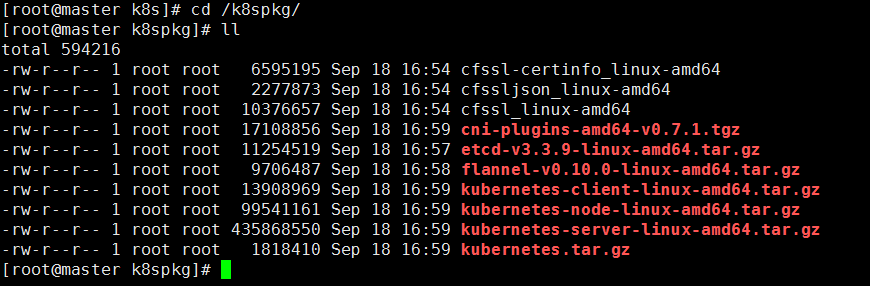

一、基础环境配置
1.配置ssh
基础环境介绍：
| 主机名 | ip | 角色 |
|---|---|---|
| master | 172.18.53.221 | master |
| node1 | 172.18.53.223 | node1 |
| node2 | 172.18.53.224 | node2 |
配置方法：
首先保证安装了包：openssh openssh-client
使用方法：
ssh-keygen -t rsa
ssh-copy-id master
ssh-copy-id node1
ssh-copy-id node2
2.安装docker（只需要在node节点安装）
获取阿里的docker repo
cd /etc/yum.repos.d/
wget https://mirrors.aliyun.com/docker-ce/linux/centos/docker-ce.repo
用yum进行安装
yum install -y docker-ce
...
Complete!
如果中途出问题的解决方法
Error: Package: docker-ce-18.03.1.ce-1.el7.centos.x86_64 (docker-ce-edge)
Requires: container-selinux >= 2.9
You could try using --skip-broken to work around the problem
You could try running: rpm -Va --nofiles --nodigest
----------------------------------------------------------------------------------------------------------------
container-selinux >= 2.9
这个报错是container-selinux版本低或者是没安装的原因
yum 安装container-selinux 一般的yum源又找不到这个包
需要安装epel源 才能yum安装container-selinux，然后在安装docker-ce就可以了。
wget -O /etc/yum.repos.d/CentOS-Base.repo http://mirrors.aliyun.com/repo/Centos-7.repo
yum install epel-release #阿里云上的epel源
然后yum install container-selinux
显示docker相关镜像的命令
yum list docker-ce.x86_64 --showduplicates | sort -r
3.准备部署的目录
mkdir -p /etc/kubernetes/{cfg,bin,ssl,log}
在这儿做一个约定：所有的文件存放路径如下：
- cfg：存放配置文件
- bin：存放二进制文件
- ssl：存放证书
- log：存放日志
- 所有的二进制包放在目录
/usr/local/src/
例如：cfssl和kubernetes的执行文件都放在 /etc/kubernetes/bin目录下
4.准备软件包
k8s组件(本次安装以1.11.3为基线)有4个包：
https://github.com/kubernetes/kubernetes/blob/master/CHANGELOG-1.11.md
[root@master k8s]# ls -l kube*
-rw-r--r-- 1 root root 13908969 Sep 18 13:52 kubernetes-client-linux-amd64.tar.gz
-rw-r--r-- 1 root root 99541161 Sep 18 13:52 kubernetes-node-linux-amd64.tar.gz
-rw-r--r-- 1 root root 435868550 Sep 18 13:52 kubernetes-server-linux-amd64.tar.gz
-rw-r--r-- 1 root root 1818410 Sep 18 13:52 kubernetes.tar.gz
etcd
https://github.com/etcd-io/etcd/releases
flannel
https://github.com/coreos/flannel/releases
cni插件
cni-plugins-amd64-v0.7.1.tgz https://github.com/containernetworking/plugins/releases https://github.com/containernetworking/plugins/releases/download/v0.7.1/cni-plugins-amd64-v0.7.1.tgz
cfssl的三个包
wget https://pkg.cfssl.org/R1.2/cfssl_linux-amd64
wget https://pkg.cfssl.org/R1.2/cfssljson_linux-amd64
wget https://pkg.cfssl.org/R1.2/cfssl-certinfo_linux-amd64
最后的准备的包应该如下：

5.解压kubernetes相应的几个包
[root@master k8spkg]# mv * /usr/local/src/
[root@master k8spkg]# cd /usr/local/src/
[root@master src]# pwd
/usr/local/src
[root@master src]# ll
total 594220
-rw-r--r-- 1 root root 6595195 Sep 18 16:54 cfssl-certinfo_linux-amd64
-rw-r--r-- 1 root root 2277873 Sep 18 16:54 cfssljson_linux-amd64
-rw-r--r-- 1 root root 10376657 Sep 18 16:54 cfssl_linux-amd64
-rw-r--r-- 1 root root 17108856 Sep 18 16:59 cni-plugins-amd64-v0.7.1.tgz
-rw-r--r-- 1 root root 11254519 Sep 18 16:57 etcd-v3.3.9-linux-amd64.tar.gz
-rw-r--r-- 1 root root 9706487 Sep 18 16:58 flannel-v0.10.0-linux-amd64.tar.gz
-rw-r--r-- 1 root root 13908969 Sep 18 16:59 kubernetes-client-linux-amd64.tar.gz
-rw-r--r-- 1 root root 99541161 Sep 18 16:59 kubernetes-node-linux-amd64.tar.gz
-rw-r--r-- 1 root root 435868550 Sep 18 16:59 kubernetes-server-linux-amd64.tar.gz
-rw-r--r-- 1 root root 1818410 Sep 18 16:59 kubernetes.tar.gz
[root@master src]# tar -zxf kubernetes.tar.gz
[root@master src]# tar -zxf kubernetes-node-linux-amd64.tar.gz
[root@master src]# tar -zxf kubernetes-server-linux-amd64.tar.gz
[root@master src]# tar -zxf kubernetes-client-linux-amd64.tar.gz
将执行文件copy到bin目录
[root@master src]# mv cfssl* /etc/kubernetes/bin
[root@master src]# cd /etc/kubernetes/bin
[root@master bin]#
[root@master bin]# ls
cfssl-certinfo_linux-amd64 cfssljson_linux-amd64 cfssl_linux-amd64
[root@master bin]# chmod +x *
[root@master bin]# mv cfssl-certinfo_linux-amd64 cfssl-certinfo
[root@master bin]# mv cfssljson_linux-amd64 cfssljson
[root@master bin]# mv cfssl_linux-amd64 cfssl
[root@master bin]# ll
total 18808
-rwxr-xr-x 1 root root 10376657 Sep 18 16:54 cfssl
-rwxr-xr-x 1 root root 6595195 Sep 18 16:54 cfssl-certinfo
-rwxr-xr-x 1 root root 2277873 Sep 18 16:54 cfssljson